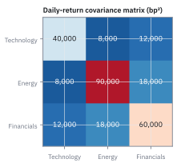
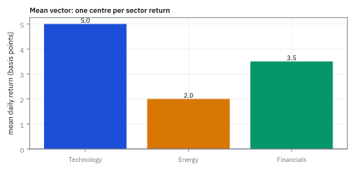
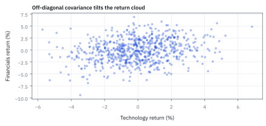
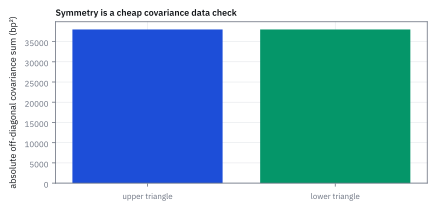

6.7 The Mean Vector and the Covariance Matrix
จัดระเบียบจุดศูนย์กลางและความสัมพันธ์ของหลายสินทรัพย์ให้อยู่ในรูป vector และ matrix
โค้ชบันทึกคะแนนนักกีฬา 3 คน แต่ต้องการรู้ว่าเวลาคนหนึ่งฟอร์มตก อีกสองคนตกตามหรือไม่ คอลัมน์ค่าเฉลี่ยเดียวพอไหม?
เฉลย: ไม่พอ ค่าเฉลี่ยสามตัวบอกระดับของแต่ละคน แต่ไม่บอกว่าใครตกพร้อมใคร ต้องมีความผันผวนของแต่ละคน 3 ตัว กับการขยับร่วมของ 3 คู่ รวม 6 ตัวเลขที่ต่างกัน วางเป็นตาราง 3 คูณ 3 ที่ซ้ายล่างเหมือนขวาบน ตารางนั้นคือ covariance matrix
Mean vector เก็บค่าเฉลี่ยของหลายตัวแปรเป็นแถวหรือคอลัมน์เดียว; covariance matrix เก็บความผันผวนเดี่ยวและการขยับร่วมกัน ใช้เป็นข้อมูลตั้งต้นของการวิเคราะห์หลายตัวแปร
ศัพท์ที่ใช้ในหัวข้อนี้
- mean vector
- vector คอลัมน์ที่เก็บ expected value หรือผลตอบแทนเฉลี่ยของสินทรัพย์แต่ละตัว ใช้ระบุจุดศูนย์กลางของ distribution หลายมิติ
- covariance matrix
- matrix จัตุรัสที่แนวทแยงมุมเก็บค่า variance ของแต่ละสินทรัพย์ และช่องนอกแนวทแยงเก็บค่า covariance ระหว่างคู่สินทรัพย์ ใช้คำนวณความเสี่ยงรวมของพอร์ต
- covariance
- ค่าที่วัดการเคลื่อนไหวร่วมกันเชิงเส้นระหว่างสินทรัพย์สองตัวในหน่วยของผลตอบแทนยกกำลังสอง
- exchange-traded fund (ETF)
- กองทุนรวมดัชนีที่จดทะเบียนซื้อขายในตลาดหลักทรัพย์เหมือนหุ้น ใช้เป็นตัวแทนการลงทุนในกลุ่มอุตสาหกรรมต่าง ๆ ของสหรัฐฯ
- Technology ETF
- กองทุน ETF กลุ่มเทคโนโลยีของตลาดสหรัฐฯ ใช้เป็นสินทรัพย์ตัวแรกใน vector ($r_1$)
- Energy ETF
- กองทุน ETF กลุ่มพลังงานของตลาดสหรัฐฯ ใช้เป็นสินทรัพย์ตัวที่สองใน vector ($r_2$)
- Financials ETF
- กองทุน ETF กลุ่มการเงินของตลาดสหรัฐฯ ใช้เป็นสินทรัพย์ตัวที่สามใน vector ($r_3$)
- basis point (bp)
- หน่วยวัดผลตอบแทนทางการเงิน โดย $1\text{ bp} = 0.01\% = 0.0001$ ในรูปทศนิยม ช่วยให้อ่านตัวเลขขนาดเล็กได้สะดวก
- positive semi-definite
- คุณสมบัติของ matrix ที่ทำให้ผลคูณรูปแบบกำลังสอง $x^{\mathsf T}\Sigma x \ge 0$ เสมอสำหรับทุก vector $x$ ซึ่งรับประกันว่า variance ของพอร์ตจะไม่มีวันติดลบ
สัญลักษณ์ที่ใช้ในหัวข้อนี้
| สัญลักษณ์ | ความหมาย | หน่วย |
|---|---|---|
| $r$ | vector ของ daily returns ของแต่ละกลุ่มอุตสาหกรรม | decimal return/day |
| $\mu$ | mean vector ที่เก็บ expected value ของผลตอบแทน | decimal return/day |
| $\Sigma$ | covariance matrix ขนาด $3 \times 3$ | return²/day² |
| $\Sigma_{ij}$ | covariance ระหว่างสินทรัพย์กลุ่มที่ $i$ และ $j$ | return²/day² |
| $T$ | จำนวนวันของข้อมูลที่ใช้ใน estimation ตัวอย่าง | days (จำนวนเต็ม) |
| $x$ | vector น้ำหนักการลงทุนในพอร์ต | unitless |
| $\mathbf R$ | correlation matrix ที่ปรับสเกลของ covariance matrix ให้อยู่ในช่วง -1 ถึง 1 | unitless |
ที่มาที่ไป: เมื่อเขียนทีละตัวไม่ไหวอีกต่อไป
พอสินทรัพย์เกินสิบตัว การเขียนค่าเฉลี่ยและความสัมพันธ์ทีละตัวกลายเป็นงานที่ทำไม่ไหว และตรวจความถูกต้องแทบไม่ได้
ทางออกคือรวบทุกอย่างเป็นสองก้อน ก้อนหนึ่งเก็บค่าเฉลี่ยทั้งหมด อีกก้อนเก็บความสัมพันธ์ทุกคู่
ก้อนที่สองมีโครงสร้างที่สวยงาม คือช่องแนวทแยงเป็นความเสี่ยงของตัวเอง ส่วนช่องนอกแนวทแยง เป็นความสัมพันธ์ระหว่างคู่ และตารางต้องสมมาตรเสมอ ซึ่งใช้เป็นเครื่องตรวจได้ฟรี
ราคาที่ต้องจ่ายคือจำนวนช่องโตตามกำลังสองของจำนวนสินทรัพย์ พอร์ตห้าร้อยตัวมีมากกว่าแสนช่อง ซึ่งประมาณจากข้อมูลไม่กี่ปีไม่ได้เลย และเป็นปัญหาที่หัวข้อ 17.8 ต้องแก้
ประวัติศาสตร์และที่มา: จาก Pearson สู่การปฏิวัติพอร์ตของ Markowitz
ราว ๆ ปี 1896 Karl Pearson นักสถิติชาวอังกฤษ ได้พัฒนาสูตรคำนวณ correlation coefficient และต่อมาในปี 1901 ได้วางรากฐานการวิเคราะห์แกนหลัก ซึ่งทำให้ covariance matrix กลายเป็นหัวใจของการจัดการข้อมูลหลายมิติ แต่ในยุคแรก ตารางสี่เหลี่ยมนี้ถูกจำกัดอยู่เพียงในแวดวงชีวสถิติและการวัดสัดส่วนร่างกายมนุษย์
จนกระทั่งในปี 1952 Harry Markowitz นักเศรษฐศาสตร์หนุ่มวัย 25 ปี ได้ตีพิมพ์บทความ Portfolio Selection ใน Journal of Finance ก่อนหน้า Markowitz นักลงทุนประเมินหุ้นทีละตัวตามผลตอบแทนและเงินปันผลที่คาดหวัง โดยไม่มีใครสนใจความสัมพันธ์ข้ามตัวแปร Markowitz ชี้ให้เห็นว่าความเสี่ยงของพอร์ตไม่ได้ขึ้นกับความผันผวนของหุ้นเดี่ยว ๆ แต่ถูกกำหนดโดย covariance matrix ผ่านรูปแบบ quadratic form $x^{\mathsf T}\Sigma x$
การค้นพบนี้เปลี่ยนการลงทุนจากการเลือกหุ้นรายตัว ไปสู่การบริหารความเสี่ยงระดับพอร์ต และทำให้ Markowitz ได้รับรางวัลโนเบลสาขาเศรษฐศาสตร์ในปี 1990 ในระบบเทรดสมัยใหม่ ทุกระบบคำนวณความเสี่ยงและตั้งขนาดการลงทุน (position sizing) ต้องอาศัย covariance matrix เป็นข้อมูลตั้งต้นเสมอ
คำถามที่เรากำลังตอบ: จัดระเบียบผลตอบแทนและความเสี่ยงของหลายสินทรัพย์อย่างไร?
ให้ $r$ เป็น vector ผลตอบแทนรายวันของ 3 กองทุนอุตสาหกรรมในตลาดสหรัฐฯ ได้แก่ กลุ่มเทคโนโลยี พลังงาน และการเงิน การดูผลตอบแทนเฉลี่ยเพียงอย่างเดียวไม่เพียงพอต่อการเข้าใจความเสี่ยง เราจึงต้องสร้าง mean vector เพื่อระบุจุดศูนย์กลาง และ covariance matrix เพื่อระบุทั้ง variance เดี่ยวและการเคลื่อนไหวร่วมกันระหว่างกลุ่ม
สามวันด้วยมือ: ผลตอบแทนรายวัน (basis points)
| วัน | Tech | Energy |
|---|---|---|
| 1 | 4 | 1 |
| 2 | 6 | 4 |
| 3 | 5 | 1 |
| ค่าเฉลี่ย | 5 | 2 |
สามวันพอให้ทำทุกขั้นด้วยมือ ตัวเลขสมมติเพื่อฝึก ไม่ใช่ข้อมูลจริง
ขั้นที่ 1 — รวบรวมค่าเฉลี่ยลงใน mean vector
พอมีหลายสินทรัพย์ การเขียนทีละตัวจะยาวเกินไป ต้องรวบเป็นก้อนเดียวก่อน
ของที่โจทย์ให้: ผลตอบแทน Tech สองวันเท่ากับ 4 และ 6 bp รวมก่อนเป็น 10 bp แล้วหาร $T=2$ ได้ mean 5 bp/day; ขั้นนี้จึงวาง 5 เป็นช่องแรกของ mean vector เหตุผลที่เรียงช่องต้องคงที่คือ covariance matrix ใช้ลำดับเดียวกัน.
ขั้นที่ 2 — นิยามของ covariance matrix: รวบความสัมพันธ์ทุกคู่เป็นตารางเดียว
บรรทัดนี้เป็น นิยาม ของตารางที่จะใช้ตลอดทั้งเล่ม ไม่ได้พิสูจน์มาจากอะไร ช่องแนวทแยงคือความเสี่ยงของตัวเอง และช่องนอกแนวทแยงคือความสัมพันธ์ระหว่างคู่ ประโยชน์ของการเขียนเป็นตารางคือคำนวณความเสี่ยงพอร์ตได้ด้วยการคูณครั้งเดียว
นำ vector ส่วนเบี่ยงเบน $(r-\mu)$ คูณด้วยทรานสโพสของตัวเอง จะได้ matrix ขนาด $3 \times 3$ โดยสมาชิกบนแนวทแยงมุมคือ variance ของแต่ละตัว ส่วนนอกแนวทแยงคือ covariance ระหว่างคู่ใด ๆ มีหน่วยเป็น $\text{return}^2/\text{day}^2$
ขั้นที่ 3 — นิยามของ sample estimate: สูตรที่เลือกใช้แทนค่าจริงที่ไม่มีวันรู้
สองก้อนนี้เป็น นิยาม ของสูตรที่เราเลือกใช้เดาค่าจริง ไม่ใช่ความจริงที่พิสูจน์ได้ ในทางปฏิบัติเราไม่รู้ค่าจริง จึงต้องเลือกสูตรสักอันมาประมาณจากข้อมูล ตัวหาร $T-1$ แทนที่จะเป็น $T$ มีเหตุผลของมัน ซึ่งพิสูจน์ในหัวข้อ 3.3
คำนวณค่าเฉลี่ยตัวอย่างจากผลรวม $T$ วัน และประมาณ covariance matrix ด้วยตัวหาร $T-1$ เพื่อปรับลด bias (degrees of freedom correction)
ขั้นที่ 4 — สร้าง covariance matrix จากสามวันนี้ ทีละช่อง
สูตร outer product ในขั้นถัดไปดูน่ากลัว แต่กับสามวันมันคือการลบ คูณ บวก หาร ที่ทำในหัวได้
ช่องแนวทแยงคือ variance ของแต่ละตัว (ค่าเฉลี่ยของกำลังสองของระยะห่าง เหมือนหัวข้อ 1.4) ช่องนอกแนวทแยงคือ covariance: จับคู่ระยะห่างของสองตัว *วันเดียวกัน* คูณกันแล้วเฉลี่ย
วันที่ 2 ทั้งคู่สูงกว่าค่าเฉลี่ย ($+1$ กับ $+2$) วันที่ 1 ต่ำกว่าทั้งคู่ ($-1$ กับ $-1$) ผลคูณจึงเป็นบวกทั้งสองวัน covariance จึงเป็นบวก: สองกลุ่มขยับตามกัน
ตัวหาร $3-1=2$ แทน 3 คือ sample correction ที่หัวข้อ 3.3 อธิบาย ช่อง $(T,E)$ กับ $(E,T)$ เท่ากันเสมอเพราะการคูณสลับที่ได้ นี่คือที่มาของความสมมาตรในขั้นที่ 5
ขั้นที่ 5 — ตรวจสอบคุณสมบัติความสมมาตร (symmetry check)
ตารางนี้ต้องสมมาตรเสมอ และเหตุผลสั้นกว่าที่คิด คือการคูณสลับที่ได้ นี่เป็นการตรวจที่เร็วที่สุดว่าคำนวณถูก และเป็นสมบัติที่หัวข้อ 5.6 ต้องการ ก่อนจะพูดเรื่อง eigenvalue ได้เลย
ตารางนี้ต้องสมมาตรเสมอ และเหตุผลสั้นกว่าที่คิด อยู่บรรทัดที่สามถึงสี่: การคูณเลขสองตัวสลับที่กันได้ ไม่ว่าสองตัวนั้นจะเป็นอะไร ช่อง $ij$ กับช่อง $ji$ จึงคำนวณจากของชิ้นเดียวกัน ย่อมเท่ากันเสมอ
อ่านในภาษาของตารางคือ สะท้อนข้ามแนวทแยงแล้วได้ตารางเดิม ใช้ประโยชน์ได้ทันที: ถ้าโปรแกรมคืนตารางที่ไม่สมมาตร แปลว่าเขียนโค้ดผิดแน่นอน ไม่ใช่เรื่องของข้อมูล เพราะสี่บรรทัดบนเป็นจริงเสมอ
ขั้นที่ 6 — พิสูจน์ positive semi-definite: ทำไม variance ของพอร์ตห้ามติดลบ
matrix ใด ๆ ที่จะเป็น covariance matrix ได้ จะต้องมีคุณสมบัติ positive semi-definite เสมอ เพราะค่า $x^{\mathsf T}\Sigma x$ คือ variance ของพอร์ตที่มีสัดส่วนการลงทุน $x$ หากค่านี้ติดลบ จะทำให้ standard deviation ของพอร์ตกลายเป็นจำนวนจินตภาพซึ่งเป็นไปไม่ได้ในความเป็นจริง
ทำไม matrix ในโลกการเงินจึงเป็นเลขสุ่มสี่สุ่มห้าไม่ได้ คำตอบคือ $x^{\mathsf T}\Sigma x$ มีความหมายทางกายภาพเป็น variance ของพอร์ตที่ถือน้ำหนักตาม vector $x$
เมื่อนำ $x$ ประกบหัวท้ายแล้วดึงเข้าไปใน expected value ก้อนตรงกลางจะยุบเป็นตัวเลข scalar ตัวเดียวคูณกับตัวเอง และค่าเฉลี่ยของจำนวนจริงยกกำลังสองย่อมไม่มีวันติดลบ
หาก matrix หลุดคุณสมบัตินี้ จะเกิดพอร์ตที่มี variance ติดลบ ซึ่งหมายถึง standard deviation เป็นจำนวนจินตภาพ สำหรับน้ำหนักอย่างละครึ่ง จะได้ variance เท่ากับ 1.75 และ standard deviation ราว 1.32 bp
ขั้นที่ 7 — แปลง covariance matrix เป็น correlation matrix ด้วย scaling
การแปลง covariance matrix ให้เป็น correlation matrix ทำได้โดยใช้ inverse ของ diagonal matrix ที่บรรจุ standard deviation ประกบหัวท้าย ซึ่งช่วยขจัดหน่วยของผลตอบแทนและทำให้เปรียบเทียบระดับความสัมพันธ์ระหว่างสินทรัพย์ได้อย่างเป็นกลางบนสเกล -1 ถึง 1
เรามักต้องการปลดหน่วยของผลตอบแทนออก เพื่อดูความเชื่อมโยงที่บริสุทธิ์ ทำได้โดยสร้าง diagonal matrix $D$ ที่เก็บ standard deviation ของแต่ละสินทรัพย์ไว้บนแนวทแยง
การคูณ $D^{-1}$ ประกบหน้าหลัง เทียบเท่ากับการหารแต่ละช่อง $\Sigma_{ij}$ ด้วยผลคูณ $\sigma_i\sigma_j$ ซึ่งปรับสเกลให้แนวทแยงมุมกลายเป็นเลข 1 เสมอ
ช่องนอกแนวทแยงของ matrix ผลลัพธ์ $\mathbf R$ คือค่า correlation ซึ่งถูกบีบให้อยู่ระหว่าง -1 ถึง 1 พอดี สำหรับสองกลุ่มนี้จะได้ correlation สูงถึง 0.866
แล้วเอาไปใช้ทำอะไรได้จริงบ้าง
การรวบค่าเฉลี่ยและความเกี่ยวพันทั้งหมดไว้ในที่เดียว ทำให้จัดการพอร์ตขนาดใหญ่ได้
ใช้เป็น input หลักของการจัดพอร์ตทุกวิธีในเล่มนี้ ตั้งแต่หัวข้อ 12.5 เป็นต้นไป
ใช้คำนวณความเสี่ยงของพอร์ตในการคูณครั้งเดียว ไม่ว่าจะมีสินทรัพย์กี่ตัว
ใช้เป็นรูปแบบมาตรฐานที่ระบบความเสี่ยงทุกระบบรับและส่งต่อกัน
Figure 6.7a — แผนผังความร้อนของ covariance matrix

แผนผังความร้อนแสดงค่าในหน่วย basis points กำลังสอง ($10^8 \times \text{decimal}$) แนวทแยงมุมคือ variance เดี่ยวของแต่ละกลุ่ม ส่วนช่องอื่นแสดงการเคลื่อนไหวร่วมกันระหว่างคู่สินทรัพย์
Figure 6.7b — แท่งแสดงค่าใน mean vector

mean vector สรุปจุดศูนย์กลางของผลตอบแทนรายวัน โดยเทคโนโลยีอยู่ที่ $5.0$, พลังงาน $2.0$ และการเงิน $3.5$ basis points ลำดับของสินทรัพย์ต้องตรงกับลำดับใน matrix เสมอ
Figure 6.7c — ภาพความสัมพันธ์ร่วมระหว่างสองกลุ่มอุตสาหกรรม

กลุ่มจุดผลตอบแทนระหว่างกลุ่มเทคโนโลยีและการเงินเอียงชี้ขึ้น สะท้อนให้เห็นว่าค่า covariance นอกแนวทแยงที่เป็นบวกนั้นมีที่มาจากเรขาคณิตของการขยับขึ้นลงตามกันในตลาดจริง
Figure 6.7d — ตรวจสอบความสมมาตรของข้อมูล

ผลรวมของค่า covariance ในสามเหลี่ยมบนและล่างต้องเท่ากันพอดี การตรวจสอบความสมมาตรเป็นด่านแรกที่ช่วยจับบั๊กจากการสลับคอลัมน์ข้อมูลได้อย่างมีประสิทธิภาพ
Worked Example — โจทย์จิ๋วที่คำนวณได้
โจทย์ให้อะไรมาบ้าง: mean รายวันของ Tech, Energy และ Financial เท่ากับ 5.0, 2.0 และ 3.5 bp ต้องสร้าง mean vector และตรวจลำดับ
คำตอบ: $mu=(5.0,2.0,3.5)^{\mathsf T}$ bp/day; ถ้า Tech มาจากสองวัน 4 กับ 6 bp ค่าเฉลี่ยคือ $(4+6)/2=5$ bp.
ตรวจเองใน 10 วินาที: ใน Excel ใส่ =AVERAGE(4,6) ต้องได้ 5 และ vector ต้องมีสามช่องตรงกับสามกลุ่ม
แปลว่าอะไร: mean vector บอกระดับกลางทีละกลุ่ม ส่วน covariance matrix บอกว่ากลุ่มใดขยับด้วยกัน. กับดักคือสลับลำดับ asset ระหว่าง vector กับ matrix
ตัวอย่างที่สอง — สร้าง covariance matrix จากความผันผวนกับ correlation
โจทย์ให้อะไรมาบ้าง: พอร์ตสามสินทรัพย์ หุ้นเหวี่ยงปีละ 18% หุ้นกู้ 6% ทองคำ 15% correlation หุ้นกับหุ้นกู้ −0.20 หุ้นกับทอง +0.05 หุ้นกู้กับทอง +0.25 มีตัวเลขแค่ 6 ตัว แต่ตารางมี 9 ช่อง
ช่องทแยงคือความผันผวนคูณตัวเอง ช่องนอกทแยงคือ correlation คูณความผันผวนของสองตัว ขั้นที่ 7 ทำกลับทางนี้พอดี ช่องซ้ายล่างเหมือนขวาบนตามขั้นที่ 5 ตัวเลข 6 ตัวจึงเติมได้ครบ 9 ช่อง
ตรวจง่าย ๆ: ช่องนอกทแยงต้องไม่เกินผลคูณความผันผวนของสองตัว เช่นหุ้นกับหุ้นกู้ต้องอยู่ระหว่าง −0.0108 ถึง +0.0108 เพราะ correlation ไม่เกิน 1 ถ้าเกิน แปลว่าคูณผิดหน่วย เช่นลืมแปลง 18% เป็น 0.18
กับดักที่พบบ่อย: ลำดับสินทรัพย์ไม่ตรงกันระหว่าง vector และ matrix
บั๊กที่เงียบและอันตรายที่สุดในการเขียนโค้ดคือ การเรียงลำดับสินทรัพย์ใน mean vector ไม่ตรงกับแถวและคอลัมน์ของ covariance matrix คอมพิวเตอร์จะไม่ส่ง error ใด ๆ ออกมาเตือนเมื่อคุณเผลอนำความผันผวนของหุ้นซิ่งไปคูณกับผลตอบแทนของพันธบัตรที่นิ่งสนิท จึงต้องกำกับชื่อคอลัมน์และตรวจสอบความสมมาตรเสมอ
ข้อจำกัด: วิธีนี้สมมติอะไร และของจริงเป็นอย่างไร
| เรื่อง | วิธีนี้สมมติว่า | ของจริงเป็นอย่างไร | ผลที่ตามมาเวลาใช้งาน |
|---|---|---|---|
| จำนวนตัวเลข | ประมาณทุกช่องได้ | จำนวนช่องโตตามกำลังสองของจำนวนสินทรัพย์ | พอร์ตห้าร้อยตัวมีมากกว่าแสนช่อง ซึ่งประมาณจากข้อมูลไม่กี่ปีไม่ได้ |
| ความน่าเชื่อถือ | ทุกช่องแม่นเท่ากัน | ช่องนอกแนวทแยงคลาดเคลื่อนมากกว่าช่องแนวทแยงมาก | ความผิดพลาดกระจุกอยู่ตรงส่วนที่การจัดพอร์ตไวที่สุด |
| ความคงที่ | ค่าคงที่ในช่วงที่ใช้ | เปลี่ยนตลอด โดยเฉพาะช่วงเปลี่ยนภาวะตลาด | ต้องเลือกว่าจะใช้ข้อมูลย้อนหลังนานแค่ไหน ซึ่งไม่มีคำตอบที่ถูกที่สุด |
สามแถวนี้รวมกันคือเหตุผลทั้งหมดของหัวข้อ 17.8 เรื่องการผสมค่าเพื่อลดสัญญาณรบกวน
โค้ดสร้าง covariance และ correlation matrix จากสามวัน
import numpy as np
r = np.array([[4, 1], [6, 4], [5, 1]], dtype=float) # three days: Tech, Energy in bp
mu = r.mean(0)
assert np.allclose(mu, [5, 2])
S = np.cov(r, rowvar=False) # divides by T - 1
dev = r - mu
assert np.allclose(S, [[1, 1.5], [1.5, 3]]) and np.allclose(S, S.T) and np.allclose(dev.T @ dev / 2, S)
x = np.array([0.5, 0.5])
assert abs(x @ S @ x - 1.75) < 1e-12 and abs(np.var(r @ x, ddof=1) - x @ S @ x) < 1e-12
assert np.all(np.linalg.eigvalsh(S) >= -1e-12)
D_inv = np.diag(1 / np.sqrt(np.diag(S)))
R = D_inv @ S @ D_inv
assert np.allclose(np.diag(R), 1) and abs(R[0, 1] - 0.866) < 5e-4 and np.allclose(R, np.corrcoef(r, rowvar=False))โค้ดสร้าง covariance ของสามวันได้ 1, 1.5, 3 bp² ตรงกับ np.cov ตรวจว่าสมมาตร variance ของพอร์ตครึ่งต่อครึ่ง 1.75 ไม่ติดลบ และหารด้วย standard deviation ได้ correlation 0.866
สรุปที่ใช้ได้จริง
- mean vector สรุปจุดศูนย์กลางผลตอบแทนของสินทรัพย์ทุกตัวให้อยู่ในรูป vector คอลัมน์เดียว
- covariance matrix เก็บ variance เดี่ยวบนแนวทแยงมุม และเก็บความสัมพันธ์ร่วมระหว่างคู่สินทรัพย์ในช่องนอกแนวทแยง
- หน่วยของ covariance คือผลตอบแทนยกกำลังสอง เช่น $\text{bp}^2$ หรือ $\text{return}^2$
- matrix $\Sigma$ ต้องสมมาตรเสมอ $\Sigma = \Sigma^{\mathsf T}$ และลำดับของสินทรัพย์ต้องตรงกันทุกมิติ